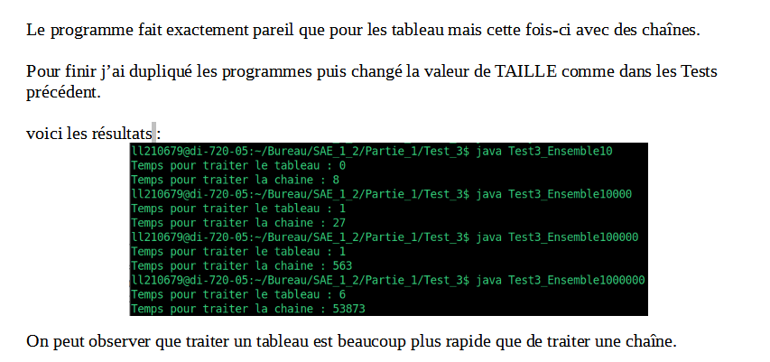
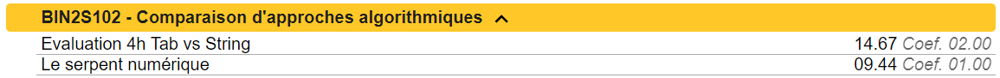
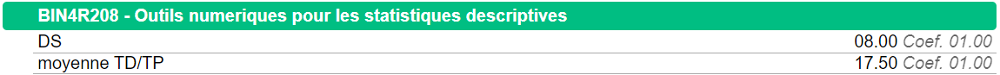
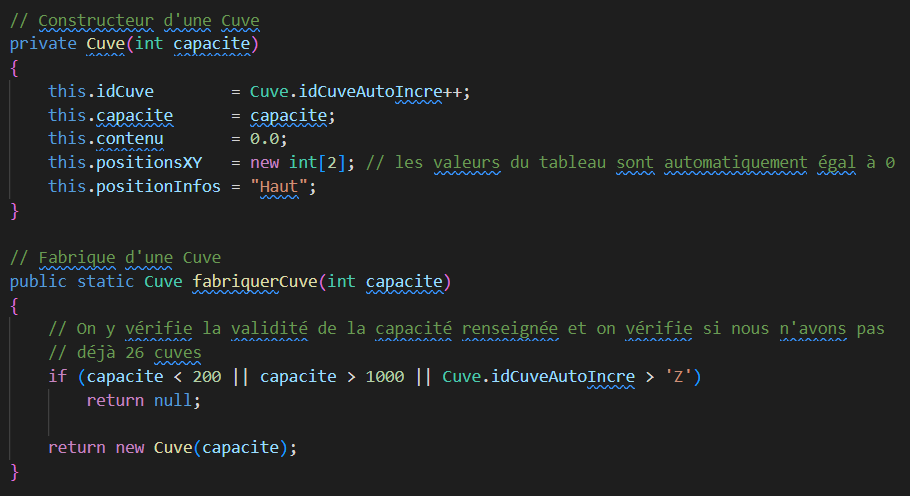

PORTFOLIO
Lemarchand Lucas B2
2021/2024
Lemarchand Lucas B2
2021/2024
De son nom entier, cette compétence se nomme : Optimiser des applications informatiques. Elle s'étend sur 3 années et est la compétence numéro 2 du BUT Informatique.
toutes les composantes sous différents niveaux de maitrise (acquis/en cours/non acquis)
Durant la SAE 1.01 nous devions créer un programme servant un générer un site web ludothèque (sur les jeux de société). Pour cela la structure du code nous était donné et nous devions la remplir pour assurer son bon fonctionnement, nous avons donc du dans un premier temps analyser tout le code initial pour le comprendre et s’y adapter.
Je pense maitriser cet apprentissage critique car avec mon groupe nous n’avons aucun problème à comprendre le programme. De plus notre note est comme vous pouvez le voir plus que convenable.
"Notes obtenues lors de la SAE 1.01"
Ensuite durant nos cours d’interface homme machine nous avons eu comme travail d’améliorer une application servant à la gestion des clients. Pour pouvoir y apporter des modifications il nous fallait comprendre le programme de base, nous avons donc créer un schéma de relation ainsi qu’une modélisation du fonctionnement du programme

"Schéma de relation de l'application de gestion de clients"
"Schéma de raisonnement de l'application de gestion de clients"
je pense avoir respecté partiellement ce composant essentiel car nous ne l’avons pas fait à chaque projet où cela aurait pu être utile.
Durant la SAE 1.02 nous avons eu une épreuve individuelle où il fallait comparer les tableaux de charactère avec les chaines de caractère. Nous faisions donc plusieurs algorithmes que nous comparions entre eux afin de trouver la méthode la plus rapide. De plus nous devions produire à coté un document explicatif de nos programmes ainsi que de leurs fonctionnements. Nous expliquions aussi les structures de données que nous comparions afin d’en déduire une conclusion.
"Extrait du dossier rendu pour l'épreuve individuelle de la SAE 1.02"
Voici la note que j’ai pu obtenir lors de la cette SAE. La note du travail concernant ce que je vous ai expliqué au-dessus étant « Evaluation 4h Tab vs String », j’estime maitriser cet apprentissage critique et avoir respecté cette composante essentielle.
"Notes obtenues lors de la SAE 1.02"
Durant nos cours de statistiques nous avons été amenés à faire un projet, celui-ci consistait à utiliser tout les outils mathématiques que nous avions pu apprendre pour les transformer en programme java.
La note de ce projet étant « moyenne TD/TP », j’estime maitriser cet apprentissage critique.
"Notes obtenues en cours de statistiques"
Durant la SAE 2.01, nous devions créer plusieurs applications en rapport avec un réseau cuves. La deuxième appli consistait à afficher la diffusion du liquide au travers des cuves. Pour cela nous avons dût nous aider des schémas de raisonnement des cuves pour en créer une copie simulable dans notre application.

"Application n°2 de la SAE 2.01"
Notre programme ayant marché, j’estime avoir respecté cette composante essentielle.
Durant toutes nos SAE liées à la programmation nous avons toujours essayé de commenter au maximum puis fait pleins de tests.
"Extrait de la classe Cuve de la SAE 2.01"
Seulement nous n’avons pas toujours eu le temps de le faire, je pense donc avoir respecté partiellement ce composant essentiel.